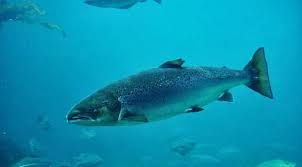

PEZ SALMON

También conocido como Reo, Salmón del Atlántico o Salmón europeo. Es un pescado azul y de agua dulce o agua salada. Pertenece a la familia de Salmonidae.
Es una especie anádroma, y pasa de los mares fríos a los ríos donde se produce la puesta y fertilización de los huevos. En estos permanecerán los alevines
por un plazo de unos dos años antes de ir al mar. Cuando empieza la migración es cuando su carne está en mejor momento. Come peces más pequeños, crustáceos e insectos.
El Salmón ha sido alimento básico en el nordeste de Europa durante siglos. Los ejemplares adultos siguen alcanzando un elevado precio en el mercado. Ahora mismo
en España su comercialización la acaparan casi por completo los salmones cultivados en granjas acuícolas, principalmente de Noruega, Escocia y Chile.
- Su cuerpo es alargado y está cubierto de pequeñas escamas redondeadas.
- Su cabeza es pequeña y sus mandíbulas son grandes, llegando hasta el extremo del ojo, y poseen unos dientes fuertes.
- La mandíbula inferior sobresale y se engarfia hacia arriba.
- Color azul grisáceo cubierto de escamas pequeñas, con manchas oscuras que se encuentran mayoritariamente por encima de la línea lateral.
- Su carne es rosácea.
MENU